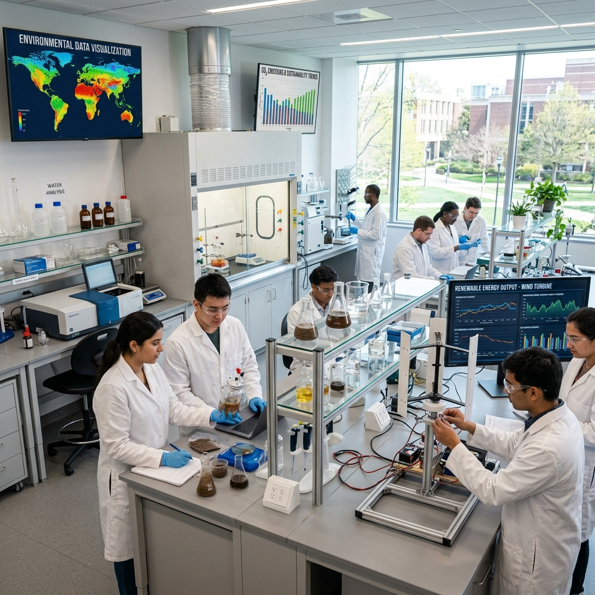
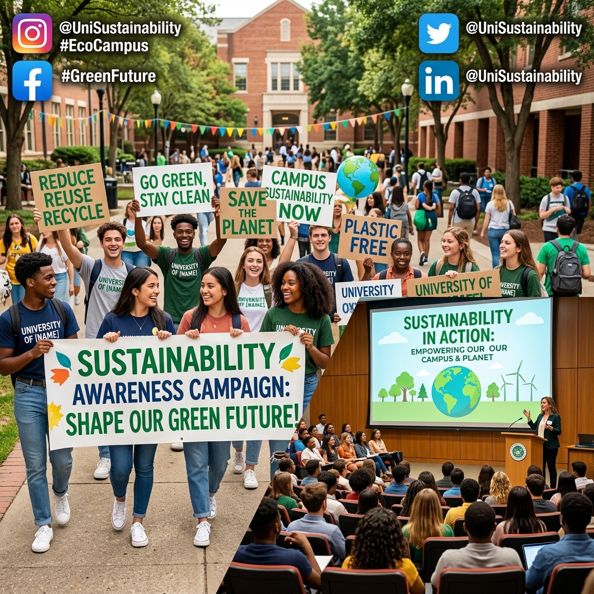

Eco University
Eco University
CSR Initiatives
Empowering Education through Corporate Social Responsibility
Eco University
Empowering Education through Corporate Social Responsibility
At Eco University, we are committed to incorporating corporate social responsibility into our educational framework. Here are some of our key initiatives:
Our Green Campus Initiative focuses on reducing our environmental footprint through energy conservation, waste reduction, and sustainable practices.

We engage with local communities through various outreach programs, including educational workshops, health camps, and cultural events. These programs aim to empower and uplift the communities around us.

Our students are actively involved in sustainability projects such as recycling drives, tree planting, and clean-up campaigns. These projects help them develop leadership skills while making a positive impact on the environment.

We promote research and innovation in sustainability by providing grants and resources for faculty and students working on cutting-edge environmental projects.

We collaborate with various organizations and industries to implement sustainable practices and drive positive change. Our partnerships include joint research projects, internships, and community development programs.
Through awareness campaigns, we educate our students and the public about the importance of sustainability and responsible corporate behavior. These campaigns include seminars, webinars, and social media outreach.
